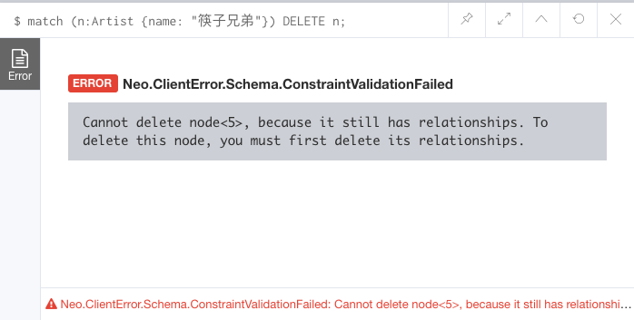

要使用
Cpyher删除节点和关系，可使用DELETE子句。
在 MATCH 语句中使用 DELETE 子句来删除任何匹配的数据。
因此 DELETE 子句用在之前例子中的 RETURN 子句的地方。
举例
下边的语句删除标签为 Album，name 属性为 Panmax 的节点：
1 | MATCH (a:Album {name: "Panmax"}) DELETE a; |
在实际删除前认真检查语句是否删除的是正确的数据是个不错的主意。
为此可以先使用RETURN子句构造语句，然后运行它。这样可以检查要删除的是不是正确的数据。一旦你对匹配的结果数据满意后，只需将RETURN子句改为DELETE子句即可。
删除多个节点
你也可以一次性删除多个节点。只需要让你的 MATCH 语句包含所有你想要删除的节点就行了。
1 | MATCH (a:Artist {name: "jiapan"}), (b:Album {name: "Panmax"}) |
删除所有节点
你可以通过省略过滤条件来删除数据库中的所有节点，就像我们从数据库中选取所有节点一样，你也可以删除它们。
1 | MATCH (n) DELETE n; |
删除带有关系的节点
在删除节点时有一个小细节需要注意，就是你只能删除没有连接任何关系的节点。换句话说，在删除节点本身前，必须先删除和它相关的关系。
如果你尝试在具有关系的节点上执行上述 DELETE 语句，你将看到如下所示的错误消息：

这个错误消息告诉我们，我们在删除节点前必须先删除它的关系。
幸运的是有一种便捷的方式可以做到这一点，我们会在下一课来介绍它。